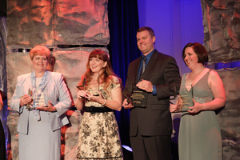
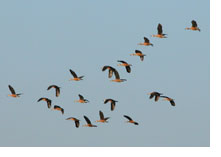

Archive 1 | Archive 2 | Archive 3 | Archive 4 | New Visitors
News Items March 2008 - March 2007
- What Works Where?
- Pedagogies for interactive technologies: whiteboards and visualisers
- MirandaNet at BETT 9-12 January 2008
- MirandaNet Research published
- MirandaNet Evaluation of TAG MAPS
- Inspirational Multimodal Concept Mapping by teachers for teachers
- Visual Learning developments
- Braided Learning Paper
- Naace Strategic Conference
- MirandaNet Fellow wins General Excellence Award
- Video and Audio Podcast: Multimodal Concept Mapping and Visual Learning
- Guardian Report on the CPD experiences of ICT Advisers
- Biodiversity and Climate Change
- Visual Learning – do you have resources to share?
- Child Development and Computers
- Inspiration Software Celebrate 25 Years
- The dawn of an electronic democracy
 What
Works Where?
What
Works Where?
ICT CPD programmes as a focus for change in theory, policy and practice:
the view from the UK, the US and Eastern Europe.
A two-day free ICT CPD workshop
12th 13th March 2008
(optional school visits on Friday March 14th )
WLE centre, Institute of Education (IOE), University of London,
20 Bedford Way, WCIH 0AL
Pedagogies for interactive technologies: whiteboards and visualisers
Seminar held on 7th 8th February 2008
We recently ran a joint workshop (in partnership with the WLE centre at the IOE, London and Steljes) for researchers and practitioners about the deeper practice that is emerging in teaching and learning using IWBs and Visualisers.
Follow this link for details of the seminar and for a link to vodcasts of the presentations. We are planning to publish a fuller report later at the same location.
MirandaNet at BETT 9-12 January 2008
It was good to see so many members and new contacts at the MirandaNet stand at this year's BETT show.
- More information on our BETT pages
- Read Theo Kuechel's daily blog from BETT (external link)
- View some pictures from the show (external link)
MirandaNet Research published
The Centre of Work-based Learning for Professionals(WLE) has published new work-based research from teachers into how concept or mind mapping can be used to support teaching and learning. This collection of papers, developed in MirandaNet Fellowship working groups, is aimed at teachers and others in education who are new to the concept of hand-drawn or digital mapping that includes sound, graphics and animation, collectively called multimodal mapping. Topics covered include how digital mind maps can be used to help AS students to recognise how different parts of the ICT syllabus link together, rather than dealing with each topic in isolation; and how primary children can use digital maps to organise their thinking in project work.
The research results, published in the WLE e-journal Reflecting Education, include podcasts as well as written papers. These papers by teachers working in schools are accompanied by contributions from internationally renowned academic thinkers who present aspects of their theories that are most relevant to practitioners.
The inclusion of studies which draw on teachers’ experiences in class alongside the writing of key theorists is a break with journal convention, but could point the way forward for the future, says Christina Preston of ICT thinktank, MirandaNet, who co-edited this volume of papers.
“Unlike most journals, Reflecting Education relates academic quality standards to a professional audience. The papers aim to introduce the people actually working in schools to learning theory whilst still keeping it relevant to classroom reality. Now that all teachers are to be obliged to take Masters level qualifications this kind of work-based research is likely to be increasingly appropriate.”
www.reflectingeducation.net/index.php/reflecting
MirandaNet Evaluation of TAG MAPS
This evaluation has been produced by MirandaNet for TAGLearning. The aim of the evaluation was to gauge the views of teacher and pupil users of its MAPS software, and the ways in which it has impacted on their teaching, learning and work management.
This research collected data from the MAPS user base provided by TAG Learning to investigate the perceptions of teachers and students of the impact of MAPS on learning, teaching and workflow.
Data was collected through email contact, online questionnaires and telephone interviews.
The Evaluation is located in the Teachers as Researchers E-Journal.
 Inspirational
Multimodal Concept Mapping by teachers for teachers
Inspirational
Multimodal Concept Mapping by teachers for teachers
Visit the Inspiration Ejournal to see the latest developments and publication!
Visual Learning developments
Win $1,000 for classroom technology!
Apply today for an Inspired Teacher Scholarship
In celebration of its 25th anniversary of inspiring excellence with visual learning, Inspiration Software is offering 25 scholarships to educators who are creatively using visual learning in ICT to help their students think and learn. Send your best project in Inspiration, Kidspiration or InspireData for an opportunity to receive a $1,000 (USD) award to support professional development training or new technology for your classroom. Applications must be received by 25 January 2008.
Find entry guidelines and an online application form at www.inspiration.com/iescholarship
Members might wish to see the kinds of ideas that have appeared on the Visual Learning part of the site.
Go to the Visual Learning Home Page
Other links to Visual Learning items:
- Inspiration Journey: Christina Preston interviews Michael Smith
- Forum Discussion: Lawrence talks about learning together with children in Beijing
- Children's PowerPoint presentation from Beijing: Blackcurrant's Journey (PowerPoint: 4.3MB)
- Podcast of Seminar: Multimodal Concept Mapping and Visual Learning
Braided Learning Paper
Christina Preston is part author of this paper published in First Monday, a peer-reviewed journal on the Internet:
Theories and Models Of Online Learning, Caroline Haythornthwaite with Richard Andrews, Bertram C. Bruce, Michelle M. Kazmer, Rae-Anne Montague & Christina Preston, August 6, 2007 First Monday, Vol 12 No 8 Chicago IL, USA
Naace Strategic Conference
Christina Preston presented a keynote on the design of ICT CPD seminars at the the Naace Strategic conference on Friday 28th September.
This talk refers to the the research on how an e-mature community of practice is learning online. There is more information below, and you can download the PowerPoint of her presentation on the findings (PowerPoint 2.10MB)
MirandaNet Fellow wins General Excellence Award
MirandaNet members will want to add their congratulations to MirandaNet Fellow Mechelle De Craene on the General Excellence Award which she received in June this year at a ceremony in Washington DC. The Award, from Cable in the Classroom as part of its Leaders in Learning Awards, recognises Mechelle's unique contribution to the use of IT with special needs students. Read more about her award here, and view a video of Mechelle in action here.
- Mechelle De Craene - General Excellence Award Announcement
- Video of Mechelle in action
- Mechelle's Podcast
Video and Audio Podcast: Multimodal Concept Mapping and Visual Learning
This seminar, funded by Inspiration, was held at the WLE Centre, Institute of Education, London, on July 2nd 2007, and was part of the series 'Fascinating Cultural Objects: 'Multimodal concept mapping in teaching and learning'. It was followed by a session about writing challenges for teachers as researchers.
- Follow this link for a video podcast of the seminar (with a link to an audio version)
- Follow this link for background information about the seminar
Guardian Report on the CPD experiences of ICT Advisers
The latest research by MirandaNet Fellows, Braided Learning, is about how an e-mature community of practice is learning online. There is a report on the Guardian website:
Nightingale, J. Research : Education without complications, Guardian, Link Supplement June 19th, London http://education.guardian.co.uk/elearning/story/0,,2105790,00.html
It has been a busy time at MirandaNet. They have produced another report, funded by the Institute of Education's centre for excellence in work-based learning (WLE), investigating teachers'. advisers' and teacher educators' professional development needs in ICT with 250 members of the IT specialist groups Naace, ITTE and MirandaNet.
It found that around a third of the respondents had received no ICT training for three years and some ten per cent had never had any form of formal instruction. Practice-based training, rather than skills-based or academic courses, were deemed most useful by 41%. In terms of motives for using ICT, equipping learners to be independent featured prominently (48%) as did international collaborations (19%). Very few respondents made any link to supporting vocational learning a key strand of the new 14-19 curriculum.
In terms of ICT CPD needed for the future, there was a split in opinion with Naace members identifying learning platforms as the priority while ITTE and MirandaNet members pinpointed a need for practice-based courses and applied research.
- Download a summary: Expert ICT advisers considering their own ICT CPD experiences (Word 53KB)
- Download the full report: Education Professionals' perspectives on ICT CPD: Past, Present and Future (PDF 803KB)
- Download the PowerPoint of Christina Preston's presentation on the findings to the Naace Strategic Conference (PowerPoint 2.10MB)
- Visit the WLE Centre at the Institute of Education, London, where the report is published: www.wlecentre.ac.uk
You might also be interested in Christina Preston's Braided Learning Presentation made on 23 April 2007at Leicester University (Braided Learning: Salmon's Sixth Step?). The full presentation with the sound track and notes are available here:
Biodiversity and Climate Change
MirandaNet Scholar Shahjahan Siraj from Bangladesh sends us news of a Seminar which Climate Change Cell Bangladesh is organising for the International Day for Biological Diversity, 2007.
Follow this link for an interesting Flash Multimedia Presentation.
Visual Learning – do you have resources to share?
As a result of our work in multimodal mapping, MirandaNet have been invited by Naace to develop a knowledge base for teachers at Key Stage Three to provide resources to get them started quickly. Please let us know if you have resources to offer or would like to start creating some.
Follow this link for an Inspiration map outlining the areas where we think computers can help. The map leads to separate strands on the Forum where readers can submit contributions. The following theme leaders will be coordinating the resources:
Display technologies: John Cuthell
Creating resources designed for visual learning: Jane Finch
The interactive web in Visual Learning: Theo Keuchel
Images in Visual Learning: Theo Keuchel
Communicating visually through animation: John Cuthell
Visualising Data: Christina Preston
Creating Maps of ideas: Michael Smith and Nigel Riley
Games in visual Learning: John Cuthell
Visual Narratives: Christina Preston
The website will be arranged so that teachers have four buttons to press
Why should I know this?
How can I use it in my classroom?
What do I need to get started?
Where can I find other resources?
We invite all our readers to participate online by selecting the themes that interest you from the Inspiration map and contributing to the forum.
Child Development and Computers
MirandaNet Fellow Mechelle De Craene has been experimenting with the use of video to capture moments in a child's learning that cannot be captured in any other way. The video extract to the right is hosted on You Tube. Most MirandaNet visitors will not be familiar with the kind of learning problems that face Mechelle's pupils, and will be surprised to learn that this is a video of a student learning to use the computer for the first time. In particular he is "learning to make the connection between the mouse and the actions on the screen as well as digital object permanence (i.e. to look for objects or images on a screen even though they may appear to be hiding)." Mechelle says she is very proud of him. "He is such a joy to teach."
When viewing this video, look out for the moment when the boy realises that he has understood 'g for girl', and look for his delight when he makes the girl re-appear. (Technical note: please use the contact form if you cannot see this video, giving details of computer type and browser type. I've already heard that it doesn't work with Internet Explorer on the Mac, but not even Apple recommend you use that browser now!)
Visit Mechelle's blog for further information.
Sponsor's Announcement: Inspiration Software Celebrate 25 Years
Inspiration Software® has been inspiring visual learning and thinking for 25 years. To celebrate our 25th anniversary, we are offering free new online resources to help you incorporate Inspiration®, InspireData™ and Kidspiration® into your classroom.
Visit www.inspiration.com/ie/25/
More information about Inspiration in the Partners' section
The
dawn of an electronic democracy
"Proudly utopian, Etopia is a shared online space that aims to show children from different cultures they have common interests. Too idealistic?" Read Sean Dodson's report in the Guardian.
New Projects
MirandaNet and Promethean World are pleased to announce a joint research project into the use of Interactive White Boards. The ACTIVWorld Project builds on earlier work supported by Promethean World, which is reported in detail on the Interactive Whiteboard Project page. There is more information about this project on the MirandaNorth page, where there is a link to John Cuthell's Virtual Learning website and further details of the findings. Visitors can explore parts of the Promethean Ambassadors E-Journal as well.
Our interactive Ejournals have produced a growing number of Case Studies which you can explore.
MirandaNet have published research projects which highlight what kind of ICT CPD works. There are three key areas of publications:
The first is Learning to use ICT in classrooms: teachers’ and trainers’ perspectives (Preston, C 2004 TTA/MirandaNet London) . This reports an investigation into the effectiveness of the NOF programme for training UK teachers in the use of ICT in teaching and learning (follow this link for more information).
- Part One: A summary of the evaluation of English NOF ICT teacher training programme 1999 - 2003 (PDF file, 220K)
- Part Two: Emergent trends from the evaluation of the NOF ICT programme for school trainers, ICT advisers and teacher educators. (PDF file, 672K)
- Part Three: The full evaluation of the English NOF ICT teacher training programme (1999 - 2003) (PDF file, 1MB)
NB: to read these files you will need a PDF reader such
as Acrobat
 .
.
The second arises from a collaboration with Southampton University. See the reports on Supply Teachers, undertaken in collaboration with Select Education (Preston and Danby 2005), and in ECDL for Educators, in collaboration with Aston-Swann (Preston and Danby 2005).
And a third report from 2000 which is still relevant to building communities of practice as an ICT CPD model is Teachers as Innovators: an evaluation of what motivates teachers to use ICT (Preston, Cox and Cox 2004 TTA/MirandaNet London) (summary only: PDF file, 120K)
The World Ecitizens web site and E-Lapa Projects feature work with pupils, some of which can be viewed in the World Ecitizens Gallery, and in the E-Lapa Gallery. Members might want to explore the WE Journal as well.
We have three slightly older Projects which should be of interest to all our members. Have a look at the Web@Classroom Project, an exciting international project involving colleagues in Ireland, Portugal, Spain and the UK. We publish some of the early results, and there are lots of pictures of the pupils in an English school.
New Visitors
MirandaNet welcomes new visitors. Follow this link for information on how to join the community.
[Back]